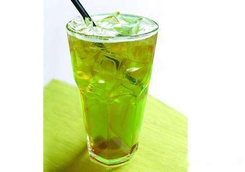
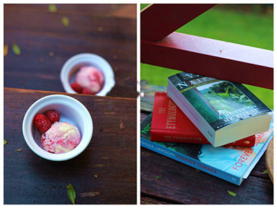
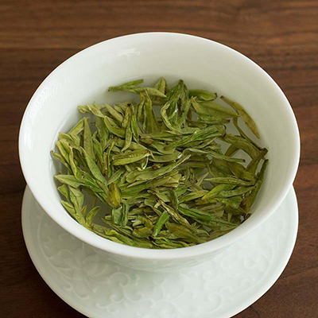
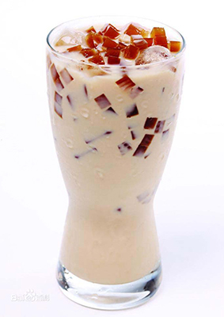

 Chock full of vitamins and minerals,this elixir combines the healthful benefits of green tea with a twist of chamomile blossoms and ginger root.
 Combining raspberry juice with kemon grass, citrus peel and rosehips,this icy drink will make your mind feel clear and crisp.
 Bluebrries and cherry essence mixed into a base of elderflower herb tea will put you in a relaxed state of bliss in mo time.
 Wake up to the flavors of cranberry and hibiscus in this vitanmin C rich elixir.